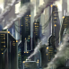

Factory
Factory can refer to:
- Factory building set (e.g.
 Civilian Industries)
Civilian Industries)  Factory World designation
Factory World designation
Factory District (secondary urban district with Civilian Industry specialization) Odd Factory planetary feature
Odd Factory planetary feature
| This disambiguation page lists articles associated with the same title. If an internal link led you here, you may wish to change the link to point directly to the intended article. |